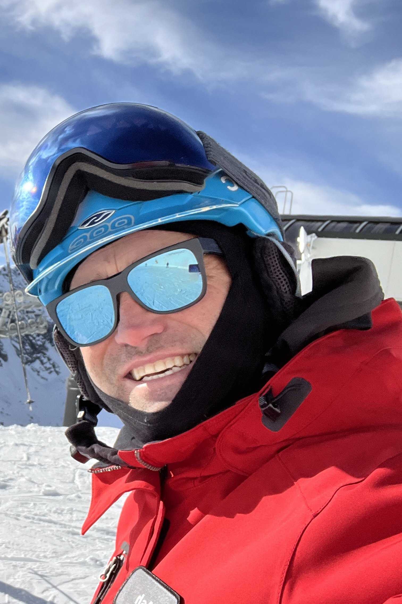
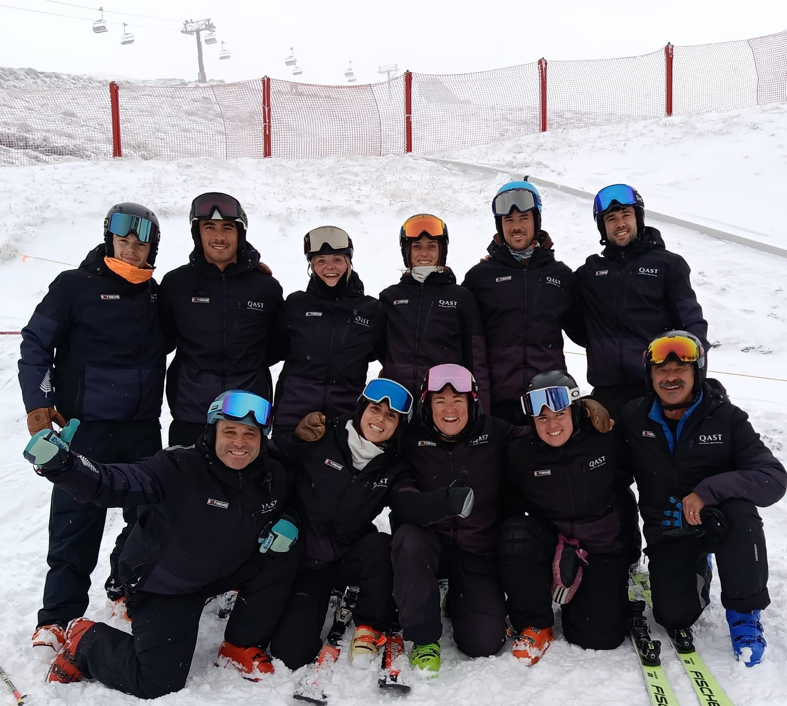

Japan · New Zealand
Extraordinary mountain experiences, year-round.
Premium private ski mountain experiences with a pro who knows the mountains and conditions, shaped around your skiing, confidence, and goals.
Choose your destination
Your Pro
Ski with Ash.
With more than 25 seasons teaching skiing across the world—including New Zealand, the United States, Canada, and Japan—skiing is my way of life.
I love sharing that passion with every level of skier. We’ll connect before your lesson, shape the day around what you want to achieve, and make your mountain experience unforgettable.
NZSIA L3 Ski · PSIE LPT · Children’s L2 · L1 Race · Freeride L1 · Telemark L1 · AST L2
Booking enquiryNew Zealand race coaching
Train with purpose.
Ski with confidence.
Personal race coaching in Queenstown for developing athletes, masters racers, and strong recreational skiers who want to become more technically accurate, tactically aware, and confident at speed.
Enquire about race coaching
Coaching shaped around your goals
Every session starts with the skier in front of me. We can focus on fundamental movement patterns, turn shape, balance and pressure control, or build toward race-specific skills through purposeful drills, directed mileage, tactical feedback, and video review when appropriate.
Sessions are available for individuals and small groups, from young athletes building strong foundations to experienced racers preparing for training or competition. Coaching can be arranged as a focused session or added to a wider Queenstown ski programme.
I have raced in New Zealand, Italy, and the United States, including four years with the Waikato Ski Team, and have coached across New Zealand, North America, and Japan. I also work as an Interfield Coach with QAST, supporting young athletes as they develop skill, confidence, and a lasting enjoyment of skiing.